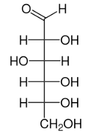
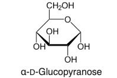
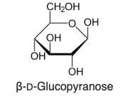
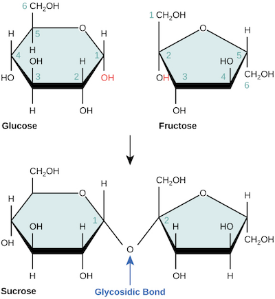
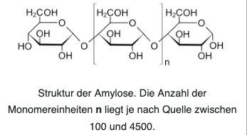
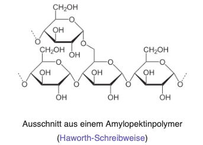

Panna Cotta: Das Geheimnis des perfekten Gels
Zwei Schalen Panna Cotta stehen vor dir. Die beiden Gelbildner sind chemisch grundverschieden aufgebaut – führen makroskopisch aber zu demselben Phänomen: einem stabilen, elastischen Gel.
Protein-Gel (Gelatine)
Rezeptur (pro Portion):
- 2,5 g Gelatine (ca. 1,25 Blatt)
- 15 g Wasser (kalt, zum Einweichen)
- 130 g Sahne
- 120 g Milch
- 25 g Zucker
- Bourbon-Vanille
Herstellungsschritte:
- Gelatine im kalten Wasser für 5 min einweichen und quellen lassen.
- Milch, Sahne, Zucker und Vanille unter Rühren kurz aufkochen.
- Auf unter 60 °C abkühlen lassen, dann die ausgedrückte Gelatine gründlich einrühren.
- Auf ca. 10 °C abkühlen, in Förmchen füllen und kühl stellen.
Kohlenhydrat-Gel (Carrageen)
Rezeptur (pro Portion):
- 0,15 g Iota-Carrageen (sehr geringe Dosis!)
- 130 g Sahne
- 120 g Milch
- 25 g Zucker
- Bourbon-Vanille
Herstellungsschritte:
- Carrageen-Pulver trocken mit dem Zucker vermengen (fein dispergieren, um Klumpenbildung zu verhindern!).
- Milch und Sahne im Topf vorlegen, Zucker-Carrageen-Mischung klumpenfrei einrühren.
- Unter ständigem Rühren aufkochen (Aktivierungstemperatur > 80 °C).
- Auf ca. 30–35 °C abkühlen, in Förmchen füllen und kühl stellen (geliert bereits bei Raumtemperatur!).
Leitfragen für den Forschenden Unterricht
Wie gelingt es winzigen Mengen eines Feststoffs (2,5 g Gelatine bzw. nur 0,15 g Carrageen), über 250 g flüssige Milch und Sahne vollständig in einen wackelfesten Zustand zu überführen?
Wähle deinen Untersuchungspfad:
Der Sol-Gel-Übergang: Wie Flüssigkeiten fest werden
Ein Gel ist ein disperses System aus mindestens zwei Komponenten: Ein dreidimensionales Makromolekül-Netzwerk (die feste Phase) schließt ein enormes Volumen an flüssigem Wasser ein. Verändere die Temperatur und beobachte, wie sich die Ketten verhalten!
Labor-Parameter
Gelatine-Netzwerk bei 20 °C
Die Polypeptidketten haben sich beim Abkühlen partiell zu Tripelhelices verdrillt und bilden über Wasserstoffbrückenbindungen ein kontinuierliches 3D-Netzwerk. Wassermoleküle werden in den Maschen gefangen.
1. Was ist ein Sol? (Flüssige Dispersion)
Bei hoher thermischer Energie bewegen sich die Makromoleküle so intensiv, dass intramolekulare und intermolekulare Wechselwirkungen ständig aufbrechen. Die Polymerketten liegen als ungebundene, bewegliche Knäuel vor. Die Flüssigkeit fließt frei (geringe Viskosität).
2. Was ist ein Gel? (Elastischer Festkörper)
Beim Abkühlen sinkt die kinetische Energie der Teilchen. Schwache zwischenmolekulare Kräfte (vor allem Wasserstoffbrückenbindungen) überwiegen nun. Die Ketten verknäulen und bilden Junction Zones (Verknüpfungsknoten). Es entsteht ein 3D-Gitter, das Wasser immobilisiert.
3. Synärese: Wenn das Gel altert
Bleibt ein Gel lange stehen oder wird die Temperatur zu tief, ziehen sich die Polymerstränge durch maximale Wechselwirkungsbildung immer enger zusammen. Das Gitter schrumpft und presst freies Wasser an die Oberfläche – das Phänomen, wenn sich auf Joghurt oder Pudding Wasser absetzt.
Proteine: Meisterwerke der Faltung und Architektur
Gelatine wird aus Kollagen gewonnen – dem häufigsten Protein tierischen Bindegewebes. Um zu verstehen, warum Gelatine geliert, müssen wir die Hierarchie der Proteinstrukturen von den Aminosäure-Bausteinen bis zum dreidimensionalen Netzwerk untersuchen.
Die Bausteine: 2-Aminosäuren (α-Aminosäuren)
Alle natürlichen Proteine sind aus 20 verschiedenen proteinogenen Aminosäuren aufgebaut. Sie besitzen am selben zentralen Kohlenstoffatom (Cα-Atom) vier verschiedene Substituenten:
- Aminogruppe (-NH₂ / -NH₃⁺): Wirkt als Brønsted-Base (Protonenakzeptor).
- Carboxygruppe (-COOH / -COO⁻): Wirkt als Brønsted-Säure (Protonendonator).
- Rest R: Die funktionelle Seitenkette bestimmt die chemischen Eigenschaften (polar, unpolar, sauer, basisch).
- Chiralität: Das Cα-Atom ist asymmetrisch substituiert (Chiralitätszentrum, Ausnahme: Glycin mit R = H). Natürliche Aminosäuren liegen in der L-Konfiguration vor.
Die Peptidbindung: Kondensationsreaktion
Verknüpfen sich zwei Aminosäuren miteinander, reagiert die Carboxygruppe der einen Aminosäure mit der Aminogruppe der zweiten unter Abspaltung eines Wassermoleküls (H₂O). Klicke auf den Button, um die Reaktion molekular durchzuführen!
Hierarchie der Proteinstruktur & Wechselwirkungen
Wähle eine Strukturebene aus, um die Kräfte zu untersuchen, die das Molekül in seiner Form halten:
Vier entscheidende Wechselwirkungen der Tertiärstruktur:
Disulfidbrücken
Atombindung zwischen zwei Cystein-Seitenketten (-CH₂-S-S-CH₂-). Sehr temperaturstabil.
Ionenbindungen / Salzbrücken
Anziehung zwischen deprotonierten sauren (-COO⁻) und protonierten basischen (-NH₃⁺) Seitenketten.
Wasserstoffbrückenbindungen
Zwischen polaren Gruppen (z.B. OH-Gruppen von Serin oder NH- und CO-Gruppen des Peptidrückgrats).
London-Wechselwirkungen
Wechselwirkungen zwischen temporären und induzierten Dipolen unpolarer Kohlenwasserstoff-Reste (hydrophobe Wechselwirkungen im Proteininneren).
Thermische Denaturierung & Kiwi-Effekt:
Hitze, extreme pH-Werte oder Enzyme zerstören die Sekundär- und Tertiärstruktur durch Aufbrechen der Wasserstoffbrücken und Ionenbindungen. Die Primärstruktur (kovalente Peptidbindungen) bleibt intakt.
Frische Ananas enthält das proteolytische Enzym Bromelain (Kiwi enthält Actinidain). Diese Enzyme spalten die Polypeptidketten der Gelatine hydrolytisch in kurze Bruchstücke. Die Bruchstücke können kein dreidimensionales Netzwerk mehr knüpfen – die Panna Cotta bleibt flüssig! (Wird die Ananas vorher kurz aufgekocht, denaturiert das Enzym und das Gelieren funktioniert).
Kohlenhydrate: Von der D-Glucose zum pflanzlichen Stärke-Gel
Im Rezept für das pflanzliche Panna Cotta verwendeten wir Carrageen. Die Grundbausteine von Carrageenen sind Galactose und 3,6-Anhydrogalactose (vgl. Wikipedia-Artikel Carrageen ↗). Zur didaktischen Vereinfachung und passend zum Bildungsplan der Kursstufe betrachten wir im Detail nun das wichtigste pflanzliche Hydrokolloid: die Stärke, aufgebaut aus reiner D-Glucose.
D-Glucose: Offenkettige Fischer-Form vs. Haworth-Ringform
Glucose (C₆H₁₂O₆) ist eine Aldohexose: Sie besitzt eine Aldehydgruppe am C1 und fünf Hydroxygruppen. In wässriger Lösung liegt weniger als 0,1 % in der gestreckten Kettenform vor; über 99,9 % schließen sich intramolekular zu einem stabilen Sechsring (Pyranose, Halbacetal) zusammen.

- C1 (oben): Aldehydgruppe (−CH=O) bestimmt den Charakter als Aldohexose (reaktives Carbonylzentrum für den Ringschluss).
- C2 bis C5: Vier Asymmetriezentren (Chiralitätszentren).
- D-Konfiguration: Die OH-Gruppe am C5 (dem am weitesten von C1 entfernten Chiralitätszentrum) steht nach rechts (D = dexter).
- Merkhilfe (Ta-Tü-Ta-Ta-Regel): Orientierung der OH-Gruppen an C2–C5: rechts (Ta) – links (Tü) – rechts (Ta) – rechts (Ta).

- Halbacetal-Ringschluss: C5-OH greift nucleophil C1 an → Sechsring (Pyranose).
- FLoH-Regel (Fischer links, oben Haworth): C3-OH (in Fischer links) steht im Ring nach oben; C2-OH und C4-OH (in Fischer rechts) stehen nach unten.
- α-D-Glucose: Die neu gebildete anomere OH-Gruppe am C1 zeigt nach unten (trans zur CH₂OH-Gruppe an C5).
- Bedeutung für Stärke: Ermöglicht gewinkelte α-1,4-Ketten und spiralförmige Helices (Amylose).

- FLoH-Regel konsequent: C3-OH steht oben; C2-OH und C4-OH stehen nach unten.
- Äquatoriale Lage (C1): Am anomeren C1 steht die OH-Gruppe nach oben (cis zur CH₂OH-Gruppe an C5).
- Thermodynamische Stabilität: In wässriger Lösung liegt das Mutarotations-Gleichgewicht zu ca. 64 % bei der β-Form.
- Bedeutung für Cellulose: β-1,4-Bindungen führen zu gestreckten, linearen Faserbündeln.
Die glykosidische Bindung: Kondensation zweier Monosaccharide
Reagiert die anomere Halbacetal-OH-Gruppe eines Glucose-Moleküls mit einer alkoholischen OH-Gruppe eines zweiten Zuckermoleküls unter Abspaltung von H₂O, entsteht ein Vollacetal – eine glykosidische Bindung.

- Monomere Edukte: Links α-D-Glucose (Sechsring / Pyranose mit anomerer C1-OH-Gruppe in Rot), rechts β-D-Fructose (Fünfring / Furanose mit anomerer C2-OH-Gruppe in Rot).
- Kondensationsreaktion: Unter Abspaltung eines Wassermoleküls (H₂O) reagieren die beiden anomeren Hydroxygruppen miteinander.
- Glykosidische Bindung (Glycosidic Bond): Es entsteht eine kovalente Sauerstoffbrücke (Vollacetal). Bei Saccharose handelt es sich um eine α-1,β-2-glykosidische Bindung.
- Übertrag auf die Stärke-Synthese: In Amylose und Amylopektin erfolgt prinzipiell dieselbe Kondensationsreaktion, jedoch zwischen zwei Glucose-Molekülen: Das anomere C1-OH reagiert mit der alkoholischen C4-OH-Gruppe des Folgemonomers zu einer α-1,4-glykosidischen Bindung.
- Maltose (Malzzucker): α-D-Glucose + D-Glucose über α-1,4-glykosidische Bindung (zentraler Baustein und Spaltprodukt der Stärke).
- Saccharose (Haushaltszucker): α-D-Glucose + β-D-Fructose über α-1,β-2-glykosidische Bindung (beide anomeren C-Atome sind miteinander verknüpft; wichtigstes Transportdisaccharid in Pflanzen).
- Lactose (Milchzucker): β-D-Galactose + D-Glucose über β-1,4-glykosidische Bindung (charakteristisches Disaccharid in der Milch).
Polysaccharide: Amylose vs. Amylopektin
Pflanzliche Stärke besteht aus zwei Makromolekül-Typen mit völlig unterschiedlicher Verknüpfung und Raumstruktur:
Amylose (Linear & Helikal)

- Verknüpfung: Rein α-1,4-glykosidisch unverzweigt (ca. 100 bis 4.500 Glucose-Einheiten).
- Raumstruktur: Durch die abgewinkelte α-1,4-Bindung rollt sich die Kette zu einer linksgängigen Helix (Schraube) auf.
- Gel-Bildung: Beim Abkühlen lagern sich lineare Ketten über Wasserstoffbrücken parallel an (Retrogradation) und bilden feste Gele.
Amylopektin (Stark Verzweigt)

- Verknüpfung: Hauptkette α-1,4-glykosidisch, zusätzlich alle 24–30 Monomere eine α-1,6-glykosidische Verzweigung (über die C6-Hydroxymethylgruppe).
- Raumstruktur: Riesiges, baumartig verzweigtes Riesenmolekül (bis zu 100.000 Glucose-Einheiten, eines der größten Naturstoffmoleküle überhaupt!).
- Gel-Eigenschaft: Verhindert durch die sperrige Verzweigung ein zu starkes Verklumpen und sorgt für zähflüssigen, stabilen Kleister.
Der molekulare Direktvergleich: Proteine vs. Kohlenhydrate
Warum verhält sich Gelatine so anders als pflanzliche Gelbildner? Die Erklärung liegt in den grundlegend verschiedenen chemischen Bindungen und zwischenmolekularen Kräften.
| Merkmal / Kriterium | Proteine (Beispiel Gelatine) | Kohlenhydrate (Beispiel Stärke / Pflanzl. Gele) |
|---|---|---|
| Monomere Bausteine | 20 verschiedene 2-Aminosäuren (polare, unpolare, saure, basische Reste) | Monosaccharide (hauptsächlich D-Glucose-Einheiten mit identischen OH-Gruppen) |
| Chemische Hauptbindung | Peptidbindung (-CO-NH-) Planarer Carbonsäureamid-Charakter |
Glykosidische Bindung (-O-) Acetal-Bindung zwischen Ringkohlenstoffen |
| Verknüpfungs-Reaktion | Kondensationsreaktion (Wasserabspaltung) zwischen -COOH und -NH₂ | Kondensationsreaktion (Wasserabspaltung) zwischen zwei -OH-Gruppen |
| Räumliche Struktur | Komplexe 3D-Faltung: Kollagen-Tripelhelices, α-Helices, β-Faltblätter, globuläre Knäuel | Regelmäßige Helices (Amylose) oder stark baumartige Verzweigungen (Amylopektin) |
| Strukturstabilisierende Kräfte | Wasserstoffbrücken, Ionenbindungen (Salzbrücken), Disulfidbrücken, London-Wechselwirkungen | Fast ausschließlich dichte Netzwerke aus Wasserstoffbrückenbindungen zwischen OH-Gruppen |
| Gemeinsamer Gelbildungs-Mechanismus | Polypeptidstränge verknäulen beim Abkühlen zu einem weitmaschigen dreidimensionalen Netzwerk und immobilisieren Wassermoleküle über Wasserstoffbrücken. | Polysaccharidketten lagern sich netzartig aneinander an und schließen freie Wassermoleküle ebenfalls über dichte Wasserstoffbrücken ein. |
Zwei unterschiedliche Molekülwelten – derselbe makroskopische Effekt
Obwohl Proteine und Kohlenhydrate chemisch grundlegend verschieden aufgebaut sind, führen beide Makromoleküle zum selben Phänomen: der Bildung eines elastischen Gels.
Proteine (Polypeptide)
Aus 2-Aminosäuren mit planaren Peptidbindungen aufgebaut. Die Ketten bilden definierte Faltungsstrukturen aus. Beim Gelieren verknäulen die Stränge zu einem flexiblen, dreidimensionalen Netzwerk.
Kohlenhydrate (Polysaccharide)
Aus Monosacchariden (wie D-Glucose) über glykosidische Bindungen aufgebaut. Lineare oder verzweigte Riesenmoleküle lagern sich über Wasserstoffbrücken zu einem zusammenhängenden Gitter zusammen.
Das Gel als disperses System
In beiden Fällen liegt ein disperses System vor: Das feste Makromolekül-Netzwerk fängt ein Vielfaches seiner eigenen Masse an flüssigem Wasser in seinen Poren ein und immobilisiert es.
Lernstandssicherung: Bildungsplan 2016 Basisfach (3.3.3 Naturstoffe)
Überprüfe dein Wissen anhand von offiziellen Bildungsplan-Operatoren (nennen, beschreiben, erklären, begründen, beurteilen) über alle drei Anforderungsbereiche (AFB I bis III). Deine Antworten werden im Browser gespeichert und können als Portfolio ausgedruckt werden!
Multiple-Choice & Struktur-Zuordnung (10 BE)
Wähle die chemisch korrekten Aussagen aus. Für jede richtige Antwort erhältst du Punkte.
Offene Transferaufgaben nach Bildungsplan BW (15 BE)
Bearbeite die Aufgaben schriftlich in den Feldern. Deine Antworten werden automatisch im Browser gespeichert. Anschließend kannst du den offiziellen Erwartungshorizont einblenden und dich selbst bewerten.
Aufgabe 1: Das Gel-Phänomen zweier unterschiedlicher Makromoleküle [AFB II • 5 BE]
Aufgabenstellung:
- Beschreibe den molekularen Aufbau eines Gels und erkläre, wie das flüssige Wasser im Makromolekül-Gitter festgehalten wird. [2 BE]
- Vergleiche Proteine und Polysaccharide hinsichtlich ihrer monomeren Bausteine und der kovalenten Bindungsart, die das jeweilige Makromolekül aufbaut. [3 BE]
Aufgabe 2: Das Kiwi- & Ananas-Dilemma [AFB III • 5 BE]
Aufgabenstellung:
- Erkläre die molekulare Ursache für das Verflüssigen der Gelatine bei frischer Kiwi. [2 BE]
- Beurteile, warum das Kochen des Fruchtpürees Abhilfe schafft und warum Stärke/Carrageen nicht beeinträchtigt wird. [3 BE]
Aufgabe 3: Verknüpfungsreaktionen im Vergleich [AFB II • 5 BE]
Aufgabenstellung:
- Formuliere die Reaktionsgleichung in Strukturformel-Ausschnitten für die Verknüpfung zweier α-D-Glucose-Moleküle zur Maltose und benenne die Bindungsart exakt. [3 BE]
- Vergleiche die funktionelle Gruppe der Peptidbindung mit der glykosidischen Bindung hinsichtlich Polarität und Hydrolyseanfälligkeit. [2 BE]
Kompetenzraster: Inhaltsbezogene Kompetenzen 3.3.3 Naturstoffe
Schätze deinen Lernerfolg ehrlich ein. Klicke auf die jeweilige Ampelfarbe (Grün = sicher, Gelb = noch unsicher, Rot = Förderbedarf).
Dein Leistungsnachweis ist bereit
Sobald du deine Aufgaben bearbeitet und dich eingeschätzt hast, klicke auf „Portfolio drucken / als PDF speichern“. Es wird ein offiziell formatiertes A4-Dokument mit deiner Punktzahl, deinen Freitexten und dem Kompetenzprofil für deine Lehrkraft erzeugt.